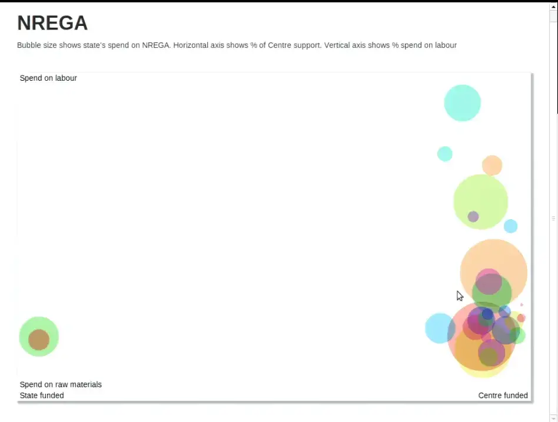
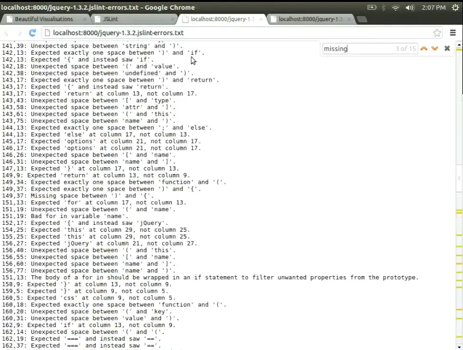
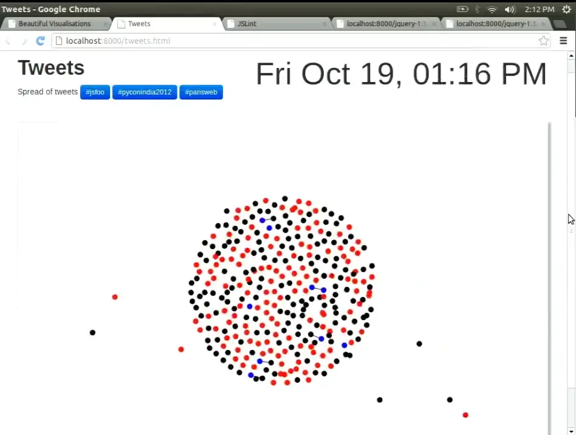
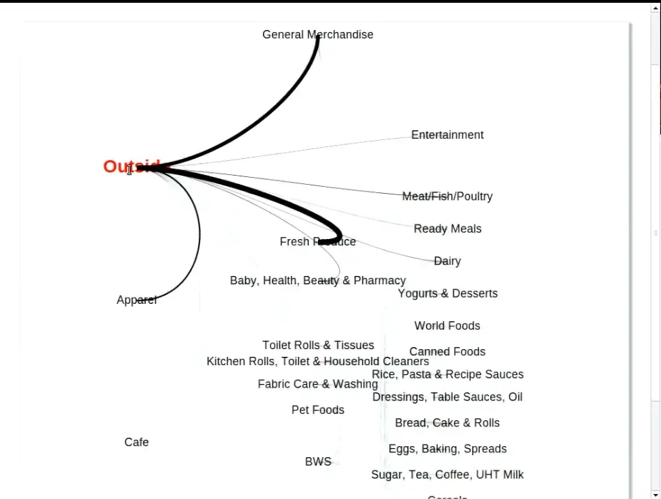
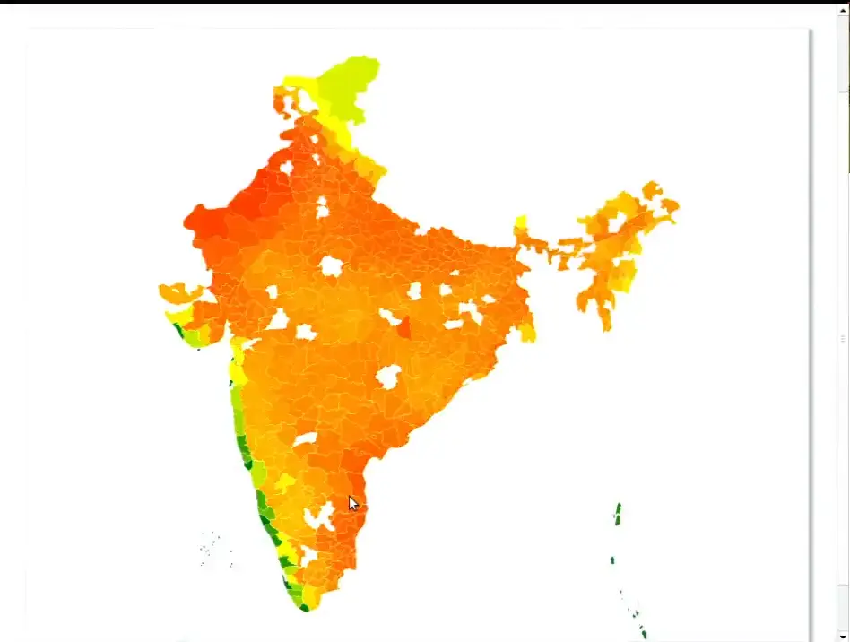
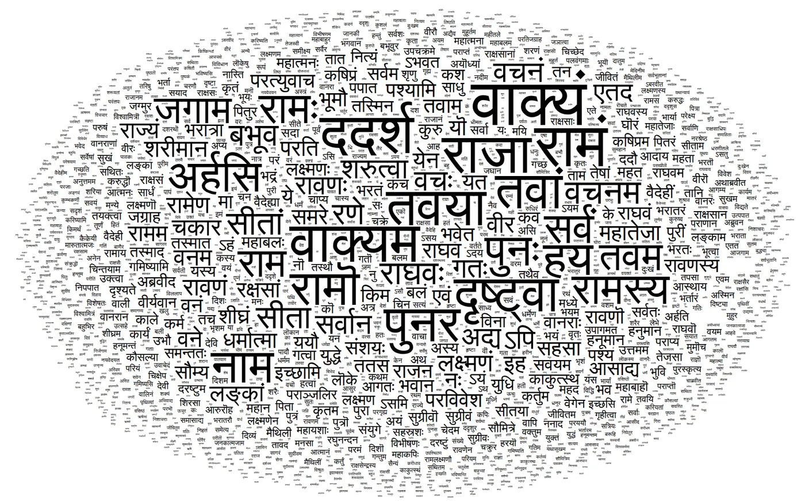
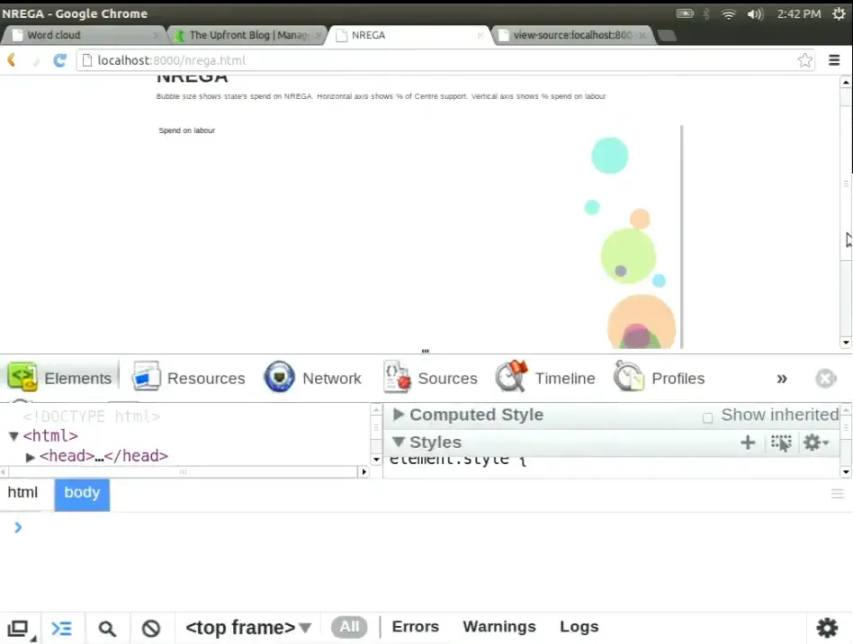
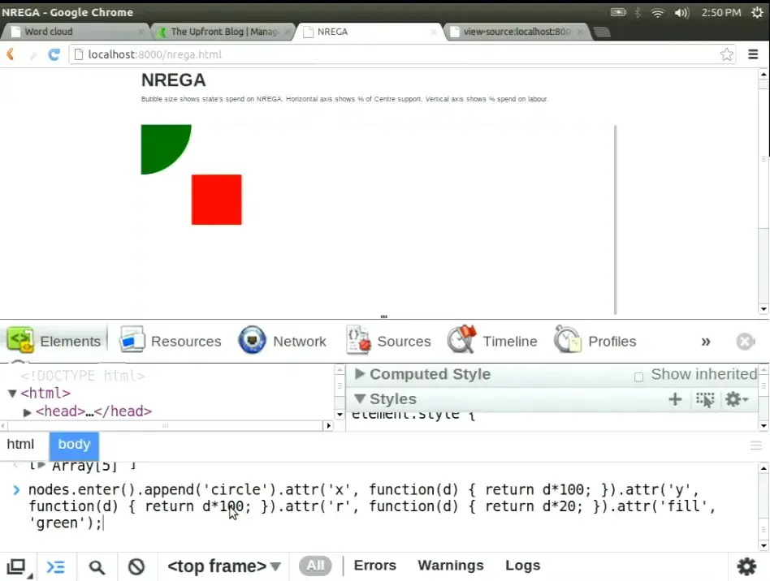

![Comic page in six panels. A speaker shows a bubble chart of NREGA spending to a JSFoo 2012 audience. Tweets, shopping paths, an India weather map and a word cloud follow, with the audience saying Oooh and Nice. An audience member with a microphone asks: But is this actually a good visualization, or does it just look cool? The speaker answers: Honestly? I used circles because they looked cool, next to a peacock labelled Pretty and a bar chart labelled Useful. A panel compares a bubble chart with a bar chart of the same data: position helps us compare better than area. Another shows data turning into SVG circles. The speaker groans Oops! beside code using x and y instead of cx and cy, with all the circles stuck in a corner. The final caption: Beautiful visualization is not enough. D3 was the tool; judgment was the real skill.](comic-page.avif)
d3.select("#guess") · before we press play
Which bubble is bigger, and by how much?
Here are 94 kinds of JavaScript mistake, counted by running JSLint over code crawled from GitHub. Each circle is one lint rule. The bigger the circle, the more often that rule was broken. Anand put this picture on the screen at JSFoo in Bangalore on 20 October 2012.
The biggest circle is the most-broken rule. How many times more often was it broken than the runner-up?
Hover over or tap a circle to see its rule. The 2012 page labelled nothing: you had to hover to find out which bubble was which.
If you went with the smaller answers, the picture did its job: the two biggest circles look roughly the same size. The numbers say 195,774 against 130,626, so the top rule was broken 1.5 times as often. Switch to the sorted dots and the gap is obvious.
Thirty-two minutes into the talk, someone in the audience put up their hand and made the same point out loud.
“In circles you don't really know which radius is bigger.”
Audience member, during the questions 33:15
Anand's reply turned the showreel into a lesson. To see why it landed, rewind to where the hour began.
d3.csv("nrega.csv") · 01:18 – 04:58
Each bubble is a state
The session was meant to be a workshop. With one hour, Anand said he would “make a compromise” 01:41: first show what the library could do, then the basic model of how you build with it. It would also be about something larger than the library:
“How one can conceive of visualizations and can create some fairly interesting things out of what might be potentially mundane data.”
Anand S 01:50
He began with the National Rural Employment Guarantee Act, which pays for rural jobs. States can spend the money on labour or on raw materials, and the funding comes from the Centre, the state, or both. On screen: “each bubble is a state” 03:33. Height shows the share spent on labour, the horizontal position shows the Centre's share of funding, and size shows total spend.




The archived file nrega.csv has 28 rows with four columns: Name, NREGA, Centre and Labour. It bears out what he pointed at. Tamil Nadu spent 97% on labour; Madhya Pradesh, 61%. Karnataka and Orissa sit alone on the left with a Centre share of zero 04:26. (So does Goa, but its circle is a dot: its spend is 434.75 against Uttar Pradesh's 556,004.)
One detail is easy to miss. The colours look as if they mean something, but they don't. The code picks each colour from the row number, cycling through 13 hues nrega.html. Anand called it “a very simple visualization, a scatter plot that's done in D3” 04:44, and promised to take it apart in the second half.
d3.layout.pack() · 04:58 – 10:40
“Should we even have this rule?”
“Since we are in a JavaScript conference,” the next dataset was the audience's own trade 04:58. The team crawled GitHub, “about 10,000 users or so”, ran JSLint over their repositories, and counted which rules were broken most. By a wide margin, the biggest bubble was Expected '{a}' at column {b}, not column {c}. Anand opened jQuery 1.3.2 to show what it meant: bad indentation.
“That is the most violated rule of JSLint… which leads one to question, should we even have this rule?”
Anand S 06:53
He clicked through small bubbles at random (“Weird assignment… Strange loop… I'm not picking these intentionally”) and then pressed the second button. The chart could count every occurrence of an error, or every file that contained it. Recount by files and the indentation giant shrinks into the crowd, while Missing 'use strict' statement jumps to second place, in 3,433 files. That rule can fire only once per file.
“There are a number of errors like this that can occur only once in a file and tend to misrepresent the total size.”
Anand S 09:33
Before anyone questioned the shape, he had questioned the count. Choosing what to measure is the first design decision, and here it changed the answer. Try the files button in the exhibit above: the race at the top becomes 3,538 against 3,433, a near tie that the circles render as identical.
force.nodes(tweets) · 11:02 – 18:13
“You were probably the last dot”
Then the room saw itself. “Every dot here is a tweet that has the hashtag #jsfoo” 11:10. The tweets appeared in time order, starting on Thursday afternoon: black for original tweets, red for retweets, blue for replies, with a line from each reply to its parent. A clock in the corner sped through the night. Nothing at 3 a.m. A burst at 8 a.m. as people arrived. A slump after lunch.


Then the dots ran past midnight, and the speaker asked the room.
This was the moment when an audience recognised itself in a chart. Anand hovered over a cluster of blue to read a Backbone.js thread aloud 13:21, then compared crowds. The red dots suggested JSFoo was a crowd that passes things on more than it posts its own 14:48. PyCon India a month earlier had more black. Paris Web “comes on like an explosion” 16:20. A Bollywood hashtag, #SOTY for Student of the Year, was trending at 3 a.m. Was that excitement, or “some marketing campaign”? 17:22
The tweet file in the repository tweet-jsfoo.js was refreshed after the talk. Its 1,035 tweets run from 13:55 IST on Thursday 18 October to 10:04 IST on Sunday 21 October, past the 1:57 p.m. cut-off Anand mentioned on stage. 446 start with “RT” and 73 are replies. The replay below shows that later file, not the exact frames the room saw. These are 2012 tweets pulled from a Twitter API that no longer exists, so the page cannot fetch new ones.
selectAll("path") · 18:13 – 25:32
Shopping carts, districts and a century of heat
The pace picked up. Next came a store in the UK whose carts carried “an internal GPS kind of a system” 18:50. Each label is an aisle, and the thickness of each curve shows how many carts moved that way. Anand traced the flow: fresh produce, then meat, ready meals, dairy. “A strong proximity effect” 19:55. Most people work down one side and back up the other: “notice how few people are crossing the aisles” 21:21.
Midway, someone signalled time. “Oh, it's a half-an-hour session, is it? … I'll wrap up.” It was, in fact, an hour 21:36. He carried on, and hit an aisle he couldn't read.
That is the right spirit and a thin test: one store, cart paths only, and no sample size given on stage. He presented it as a way of exploring the data, not as a finding. Then he showed India: every district, coloured by temperature, with “every flash… one month's worth of temperature data starting from 1900” 24:14. Gaps on the map were districts whose names didn't match, which he hadn't had the patience to clean that morning. The west coast stays cool, so “if you want to retire, barring the rain, you now know where you ought to be” 24:47. Bilaspur and Shimoga run hot when their neighbours run cool. “We don't quite know why this is happening.” 25:26




All the originals: NREGA · JSLint · tweets · shopping · weather (csv) · Ramayana · JSFoo words
d3.layout.cloud() · 25:32 – 29:20
What if the word cloud were in Sanskrit?
“Why do we have all of these word clouds just in English?” 25:34 The team took the Valmiki Ramayana, split it on spaces, removed some stopwords and plotted what was left. Splitting on spaces works well enough in English. In Sanskrit it scatters one name across a dozen spellings: Ramaha, Ramam, Ramo, Ramena, Ramaya, Ramasya. The room joined in, calling out forms (“There is Ramam”) that it could see better than the speaker standing beside the screen 27:05.


wordcloud.html, unchanged. The video frame is too soft to read, so this is a fresh render; the layout is random and differs from the one on stage. Shown in the talk at 26:10In the cloud, Rama looks like one prominent word among many. Add up the forms Anand named and the name occurs more than four times as often as the biggest word on the screen. It is the JSLint lesson again in another script: the picture can only be as good as the count behind it. He was candid that the cleaning was incomplete (“there are a huge number of stop words still left”), and summed up the epic anyway:
“This is a somewhat simpler, more linear epic… more like a, you know… Telugu masala movie, if you will.”
Anand S, comparing the Ramayana with the Mahabharata, “more like a soap opera” 28:27
Then he ran the same code on the conference's own tweets. Out came HasGeek, the organisers' names, live streaming, hacknight, Raspberry Pi and, oddly, “tomorrow” 28:44. That cloud still runs too ↗
credits · 29:20 – 32:33
Two charts that weren't his
“This isn't something that I've created; this is on wealthfront.com.” 29:36 The Wealthfront chart of start-up pay against equity plotted roles by cash and equity. It ran into a translation problem: an audience member pointed out that a US “director” is a role, “not what it means in India”, where the word suggests the board 30:52. The chart was right, and the label still misled this room.
To close the tour came Mike Bostock's D3 Show Reel, which morphs Apple, Amazon, IBM and Microsoft stock prices from one chart type into the next 32:00. Bostock created D3. Anand presented both pieces as other people's work.
“So that's D3, what D3 can do.” He offered to take questions before the code. The first question was not about code.
.on("question") · 32:39 – 34:10
“It looked cool”
The first hand went up for the first chart.

“The reason why I put it in bubbles is not because it would be a better data visualization; it is simply because I wanted to show circles and it looked cool.”
Anand S 33:19
He didn't defend the chart. He set out the trade-off: “If I were doing this for a client, I would have certainly put it in a different way. We tend to avoid circles.” 33:27 Areas are harder to compare than distances, especially side by side, “and angles are among the worst things that you can use to compare.” Circles waste space and are less effective “from an Edward Tufte perspective of data-to-ink ratio”, he said, citing Edward Tufte, “but in a lot of cases, if done well, they look more visually appealing.”
Honest answers like that are rare in a demo. The talk was called Beautiful Visualizations, and here the speaker separated beautiful from useful. D3 had removed the limits on what you could draw. It had not told anyone what to draw.
the line to remember · editor's summary
The bubbles looked cool. The question was whether they helped anyone see.
A follow-up came at once: “To understand which visualization makes sense for which type of data is the most difficult task, not the programming part.” (Audience, 34:10) Anand agreed: “by far a tougher problem by several orders of magnitude.” 34:29
scale.range() · 34:29 – 36:30
Position first. Avoid angles at all costs.
He gave two rules of thumb. The first is humble: “If you've seen a similar visualization that you liked, copy it” 34:44, which means you have to keep looking at other people's charts. The second is a ranking: put your most important comparison on position, the next on size, then colour, and push the rest into a separate chart.
For pictures too dense for one chart, like the flashing weather map, he offered the principle of small multiples 36:03: a grid of small maps, months across and decades down, instead of one animation the eye can't hold.
When someone asked a minute later whether the ranking was written down anywhere, Anand said he remembered it “mostly from experience” and had “seen this somewhere. I honestly can't think…” 37:58. The best-known source is Cleveland and McGill's 1984 study of graphical perception. It ranked position on a common scale as the most accurate judgment, followed by length, then angle and direction, then area, with shading and colour lowest. The stage version is a rule of thumb, and it differs in detail: the paper rates angle above area. Both agree on what matters most here. Put the comparison you care about on a shared axis.
Math.pow(d[key], .5) · a 2026 reading of the 2012 source
The circles were flatter than they looked
The archived source has a further twist that nobody mentioned on stage. The JSLint page did not size circles by the count. It sized them by the square root of the count. Then the D3 pack layout took another square root to get each radius.
var layout = d3.layout.pack()
.sort(function(a,b) { return b[key] - a[key]; })
.size([940, 600])
.value(function(d) { return Math.pow(d[key], .5) })
.padding(.5);
// inside d3.layout.pack
d3_layout_treeVisitAfter(root, function(d) {
d.r = Math.sqrt(d.value);
});
So the radius grew with the fourth root of the count, and area with its square root. The top rule's 1.5-fold lead shrinks to a circle with 1.22 times the area and 1.11 times the radius. The most common error was broken 195,774 times and the rarest just once, yet the biggest circle is only about 21 times as wide as the smallest. Press “Circles, area = count” in the opening exhibit and the giants swell while the one-off rules shrink to specks.
The same speaker knew the right rule. He explained it later that hour, walking through the NREGA code.
“Why do we use square root? Because if we use the actual value, then the radius would be proportional to the value… size is proportional to the square of the radius.”
Anand S, onnrega.html52:29
NREGA takes one square root and gets circles whose area is proportional to spend. JSLint takes two. Maybe that was deliberate, to keep the one-off rules visible, or maybe it was a slip. The code doesn't say. Either way, the audience member was more right than anyone in the room could have known: the bubbles hid the differences on two counts.
questions.enter() · 36:30 – 39:29
Ask for the data, then turn the internet off
The questions kept coming before any code appeared, and they were practical.
“Pretty much everything except IE”
“IE 9 works okay, IE 10 works well.” That was 2012. Later in the session he named old Internet Explorer as the one reason his firm had ever reached for Raphaël instead. 36:33
“Best way is ask for help”
“A programmer crowd is much better at scraping than asking for help.” Building up the datasets and the contacts took him years. 37:14
“I might forget it as well!”
He promised to tweet it. An audience member pointed others to Nathan Yau's book Visualize This. Anand added Yau's and Pete Warden's lists of data sources. 37:53
“Sleep over it”
“Spend some time looking at all the charts so that it goes in the back of your head and sleep over it.” Decide what to make at another time. “Turn the internet off; might help.” 38:33
The last answer is the most useful. Looking for inspiration and deciding what to make are separate jobs, and doing both at once is how people get lost in the gallery. Then he opened the source of the very first chart.
view-source:nrega.html · 39:29 – 47:28
Data-Driven Documents
“Let's do a view source” 39:41. The first chart turned out to be plain HTML: a doctype, Bootstrap “simply out of habit”, an <svg> tag with four hand-placed text labels (“a very crude way of labeling it”), and one script. “One of the prerequisites of getting the most out of D3 is that you know some amount of SVG.” 40:49
He started with the part that looks like jQuery. d3.select returns one element and selectAll returns all of them. He chained .append("rect").attr("x", 100)… in the browser console, and a red square appeared. “This is how D3 is like jQuery” 43:56. Then he showed the part that isn't:
“D3 stands for Data-Driven Documents… you've got data and you map that data onto elements of the document.”
Anand S 44:14
Each state becomes a circle, and each field of the state can drive an attribute of the circle. The strange part comes next. You write selectAll("circle") on an SVG that contains no circles. “selectAll does not necessarily only select stuff that exists; it also selects stuff that could exist in the future.” 45:27 Bind five numbers to that empty selection, and D3 works out which circles must be created, which updated and which removed. The “Create, Update, and Delete operations” 47:24 are what D3 calls enter, update and exit. The idea comes from the 2011 D3 paper: bind data to the browser's own document, rather than to a private scene graph.


.attr("x", …) · 47:28 – 50:30
Five circles in the corner
He typed it live: bind [1, 2, 3, 4, 5], call enter(), append a circle for each number, and set x and y to d * 100 and the radius to d * 20. Five green circles should have marched down a diagonal. “Let's hope this works. Okay, not quite. Looks like they're all sitting on the top left.” 49:05 Try it yourself.
Positions run from 100 to 500. Why does every circle sit in the corner?
The room had guesses: “The coordinates are negative.” “D is always zero.” “The last circle's sitting on top.” 49:28 Then the speaker gave the answer.
“The name of the attribute is wrong; it's actually
Anand S 49:59cxandcy, notxandy.”


.attr('x', …) in the console. 49:55SVG doesn't complain about an attribute it doesn't use on that element. It ignores it. A rectangle is placed by x and y; a circle by its centre, cx and cy, which default to zero. All five centres sat at the origin, stacked smallest to largest, and the last one drawn, with radius 100, covered the rest. He cleared the canvas, typed cx and cy, and the diagonal appeared.
The bug is small, but it makes the earlier point concrete. D3 gives you the DOM and no safety net: you need to know which shape you are drawing and how that shape is placed. Thirty minutes after “it looked cool”, the room learned the same lesson at the level of a single attribute.
.enter().append("circle") · 50:30 – 53:42
Thirty lines for a scatter plot
“What we've done here is mapped a data set onto objects. And this is the exact same principle that has been used in every one of the visualizations that you've seen so far.”
Anand S 50:30
He returned to NREGA and read it line by line. cx is the Centre's share times 900, plus 40. cy is the labour share, flipped and stretched. r is a square root, for the reason quoted above. The colour is a hue picked by row number. A <title> holds the state's name for the hover tooltip. Here is the 2012 code beside a modern equivalent.
d3.csv('nrega.csv', function(data) {
d3.select('svg').selectAll('circle')
.data(data)
.enter()
.append('circle')
.attr('cx', function(d,i) { return d.Centre * 900 + 40; })
.attr('cy', function(d,i) { return (1 - d.Labour) * 1250 + 20; })
.attr('r' , function(d,i) { return Math.pow(d.NREGA / 500000, .5) * 60; })
.attr('fill', function(d,i) { return 'hsla(' + Math.round(i * 360 / 13) + ',80%,40%,.4)' })
.append('title')
.text(function(d) { return d.Name })
});
// d3.csv now returns a Promise; join() wraps enter/update/exit
const data = await d3.csv("nrega.csv", d3.autoType);
d3.select("svg").selectAll("circle")
.data(data)
.join("circle")
.attr("cx", d => d.Centre * 900 + 40)
.attr("cy", d => (1 - d.Labour) * 1250 + 20)
.attr("r", d => Math.sqrt(d.NREGA / 500000) * 60)
.attr("fill", (d, i) => `hsla(${Math.round(i * 360 / 13)},80%,40%,.4)`)
.append("title")
.text(d => d.Name);
The whole file is 31 lines. “You might argue the 30 lines is quite a bit for a scatter plot, but remember that every single one of these visualizations, without exception, have been created in less than 100 lines.” 53:08 His closing line before questions was one sentence: “The crux of it is you can map data to visual elements.” 53:37
exit().remove() · 53:46 – 60:55
A hundred lines, and a megabyte of map
The last questions mapped out what D3 does and doesn't do. Layouts do the heavy lifting. The tweet swarm was a force-directed layout, “still under 100 lines” 54:28. The JSLint bubbles came from the pack layout, which Anand happily criticised: “it isn't doing it very efficiently if you notice, because this circle would have fitted here”, a trade-off “between speed versus size” 57:44.
Getting the data is someone else's problem. Asked which tools pull from databases, he drew a line: “this is an entirely different problem. D3 can natively consume XML, CSV, and JSON” 55:50. Asked what his own firm used, he realised something:
The answer was “always D3, perhaps Raphaël”. D3's problems were old Internet Explorer and the learning curve: “the 15 minutes of D3 overview that I gave you, I assume will make no sense whatsoever.” 59:47 The last question asked whether the flashing weather map was also under a hundred lines.
“While it's 100 lines of JavaScript, the SVG file behind it is more than a megabyte. I don't know if that's cheating or not, but that's data.”
Anand S 60:22 · the archived weather.svg is 1.87 MB

“Anand, unfortunately, we're out of time,” said a voice from the side of the stage 60:43. The complexity hadn't gone away. It had moved into the map file, the layout algorithm, the data someone had to ask for, and the decision about which shape to draw.
// editor's epilogue · written in 2026, not said in 2012
Drawing got easier again
In 2012 the hard part, for most of that room, was writing the thirty lines. Today an AI assistant will write them in seconds, in any chart type you name, and the chart will usually look polished. That makes the 2012 exchange more relevant, not less. When drawing is nearly free, the scarce skill is the one the audience member used: asking whether the shape helps anyone compare what matters.
This is an editor's reading. Anand did not say it on stage, and the talk is better for not reaching beyond its moment. His own advice from that afternoon still works as a checklist: copy charts you liked, put the main comparison on position, count the right thing, know what each attribute does, and look for inspiration at a different time from deciding what to make.